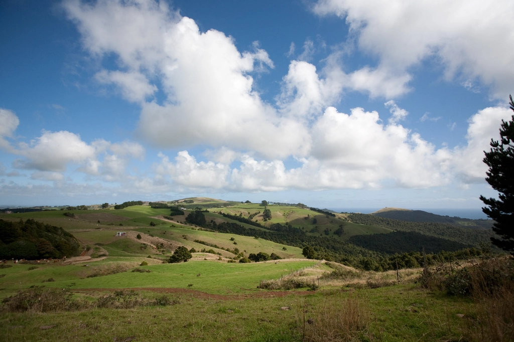
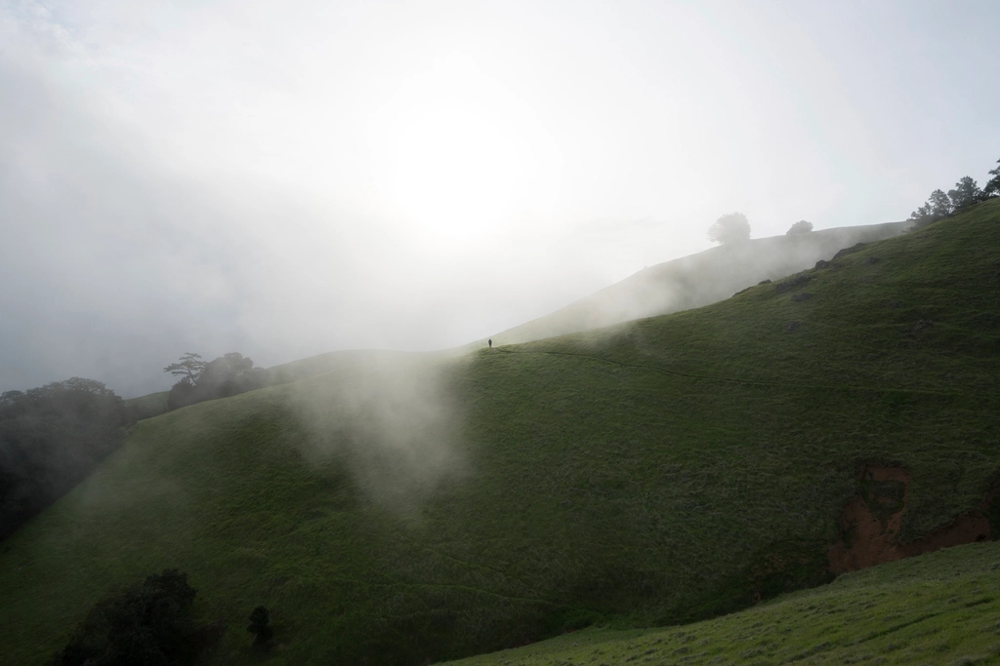

畑と牧草地が織り合うようにつながる清水ヶ丘。その丘の起伏の中に、小さなコーヒーの時間をひとつ置いています。流れる雲と光の移ろいを眺めながら、ゆっくりと過ごせる場所を目指しています。
丘の畝(うね)が描く模様、窓から差し込む光、一杯のコーヒー。清水ヶ丘で過ごす時間の断片をご紹介します。

霞む丘と空 コーヒーのひととき
コーヒーのひととき
営業時間や最新のご案内はInstagramにて随時更新しています。ご来店前のご質問も、お気軽にDMでお尋ねください。